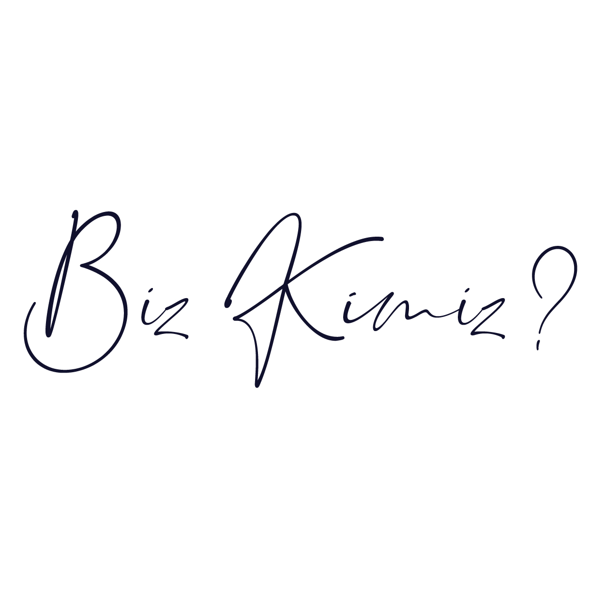
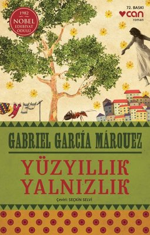

BİZ KİMİZ?
Yazılanlar sayfası uzun yıllardır yazı olarak tercih edilen bir platform. istediğiniz her türlü yazıyı bulabileceğiniz gibi, bazı yazıları paylaşabilirsiniz de. Yazılanlar sayfası 5 yıldır açılmış olan bir sitedir.
NELER BULABİLİRSİNİZ?
Sayfamızda genel olarak yayınlanan kitaplar bulunmakta, bunların dışında okumak istediğiniz her türlü içeriği bulabilirsiniz. Sayfamızda aynı zamanda makale- hikaye - fıkra - çocuk yazıları vb yazılar da bulunmaktadır. İstediğiniz her türlü içeriği bulabilirsiniz.
EN POPÜLER KİTAPLAR
Antoine de Saint-Exupéry *Küçük Prens*
Dünyada en fazla okunan ve en fazla satan kitapları arasında ilk sıralarda
olan bir kitaptır. Çocuklara yönelik bir Hikaye Kitabı olarak sanılsa da aslında
yetişkinlere de yönelik olan çok yönlü bir kitaptır. Orijinal dili Fransızca olan
kitabın kahramanı olan Küçük Prens tüm insanlığa oldukça büyük ve önemli dersler
vermektedir. Küçük Prens büyük küçük demeden herkesin okuması gereken ve kitaplığında
bulunması gereken kitaplardan biridir. Yazar bu öyküyü ikinci dünya savaşının insanlık
üzerine yapmış olduğu etkilerin hüküm sürdüğü toplum için yapılan bir eleştiri olarak
nitelendirilmiştir. Operaya, tiyatroya, sinemaya uyarlanan bu kitap aynı zamanda 210
tane dile çevrilmiş olan bir başyapıttır.
Paulo Coelho *Simyacı*
Brezilyalı olan bu yazar 1988 senesinde yazdığı ünü romanı Simyacı,
yazılmış olduğu ilk zamandan itibaren en fazla okunan romanlar arasında
her zaman en yukarıdaki sıralarda olmaktadır. Bu zamana kadar 26 tane
farklı dile çevrilmiş olan bu eserin ulaştığı satış sayısı 7 milyondan daha fazladır.
Kitap Mevlana’nın Mesnevi isimli eserinden esinlenerek yazılan bu öykü oldukça başarılı
bir öyküdür.
Yüzyıllık Yalnızlık *Gabriel García Márquez*
Kolombiyalı olan yazarın en önemli olan eseri olarak
görülen Yüzyıllık Yalnızlık 1928 senesinde Nobel Edebiyat
Ödülünü almıştır. Yazar kitapta gerçek olmayan tek bir
cümlenin dahi olmadığını söylemektedir. Kitabın konusunun
işleniş şekli, yazının dili ve diğer unsurların başarılı şekilde
bir bütün oluşturduğu bu kitap okuyanların beğenisine sunulmuştur.
Bir başyapıt olan bu kitap mutlaka okunmalıdır.
